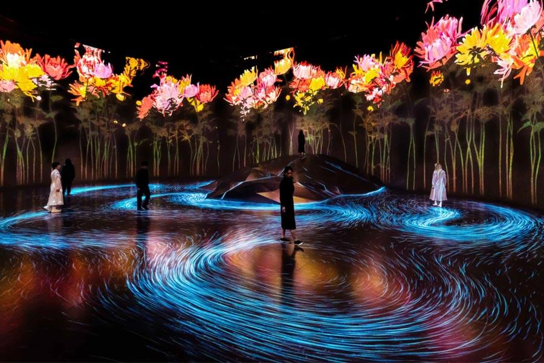

Un arte que elimina fronteras
Uno de los conceptos fundamentales en la obra de teamLab es la idea de "sin fronteras". Sus instalaciones buscan romper las divisiones entre las obras individuales, permitiendo que las imágenes y los elementos visuales fluyan libremente entre distintos espacios.
Esta propuesta también cuestiona la separación entre espectador y obra. La experiencia artística deja de estar delimitada por un objeto específico y pasa a convertirse en un entorno compartido en constante evolución.
Naturaleza y tecnología
Muchas de las creaciones de teamLab toman inspiración en fenómenos naturales como flores, agua, bosques o ciclos estacionales. Estos elementos son reinterpretados mediante herramientas digitales que permiten representar procesos complejos y dinámicos.
Lejos de presentar tecnología y naturaleza como conceptos opuestos, el colectivo propone una visión integrada. Sus obras sugieren que las herramientas digitales pueden ayudar a comprender mejor los sistemas naturales y las relaciones que los conectan.
Experiencias colectivas e interacción
La participación del público es un componente esencial en las instalaciones de teamLab. Las acciones de una persona pueden afectar la experiencia de otras, generando entornos donde las interacciones individuales producen consecuencias colectivas.
Este enfoque transforma la visita en una experiencia compartida. Las obras fomentan la exploración, la colaboración y el descubrimiento, convirtiendo cada recorrido en una oportunidad para reflexionar sobre la relación entre individuos, comunidades y espacios digitales.
